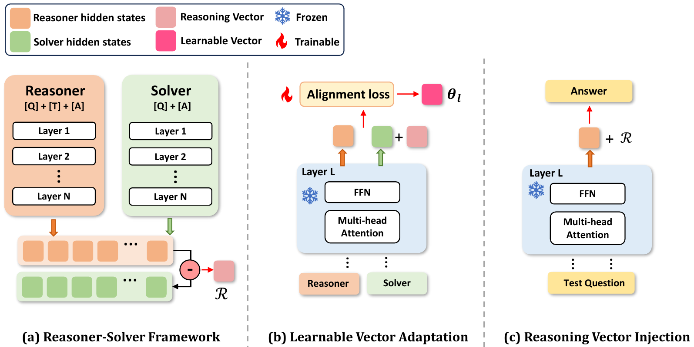

About Me个人简介
I am a master’s student in the PALM Lab at Southeast University, advised by Prof. Xu Yang. 我是东南大学 PALM 实验室的硕士研究生，导师是杨旭教授。
I study how reasoning is represented in large language models and vision-language models. My recent work uses lightweight activation interventions to explore how reasoning vectors transfer across tasks and modalities. 我的研究关注大语言模型和视觉语言模型中的推理表征。近期，我通过轻量级激活干预探索推理向量如何在不同任务和模态之间迁移。
News最新动态
-
CoT Vectors was published at ICLR 2026.CoT Vectors 发表于 ICLR 2026。
Selected Publications代表论文
-

NeurIPSCan Linguistic Reasoning Vectors Enhance Multimodal Reasoning Ability?
Advances in Neural Information Processing Systems (NeurIPS), 2026 CCF-A -
 ICLR
ICLR
CoT Vectors: Transferring and Probing the Reasoning Mechanisms of LLMs
International Conference on Learning Representations (ICLR), 2026 CCF-A
Education教育经历
- Southeast University东南大学
Master’s Student · PALM Lab硕士研究生 · PALM 实验室
Nanjing, China中国 · 南京
Research Experience研究经历
- PALM Lab @ SEU
Master's Student硕士研究生
Advised by Prof. Xu Yang导师：杨旭教授 - Reasoning Vectors推理向量
Language & multimodal models语言模型与多模态模型
Mechanism · Transfer · Intervention机制 · 迁移 · 干预
Research Summary研究概览
I study how reasoning is represented inside generative models, and how those representations can be reused across tasks and modalities.我研究生成式模型内部如何表征推理，以及这些表征如何跨任务、跨模态复用。
- CoT Vectors (2025–2026)
We represent task-general, multi-step reasoning as compact vectors. Extracted and learnable variants transfer reasoning efficiently and reveal a layer-wise, three-stage organization inside LLMs.我们将任务通用的多步推理表征为紧凑向量。提取式与可学习式向量能够高效迁移推理能力，并揭示大模型内部具有层间差异的三阶段组织结构。 - LIFT (2026–Present2026 年至今)
We transfer linguistic Reasoning Vectors from a base LLM into its frozen vision-language counterpart. Evaluation across two VLMs and six benchmarks studies whether language-side reasoning survives multimodal scaling.我们将基础语言模型中的语言推理向量迁移到其冻结的视觉语言模型中，并在两个 VLM 与六个基准上研究语言侧推理在多模态扩展后能否继续发挥作用。
Research & Collaboration研究交流与合作
I am open to research discussions and collaboration on reasoning mechanisms, activation intervention, and multimodal intelligence. The easiest way to reach me is by email.欢迎围绕推理机制、激活干预与多模态智能展开研究交流与合作。你可以通过邮件联系我。
2531131993@qq.com